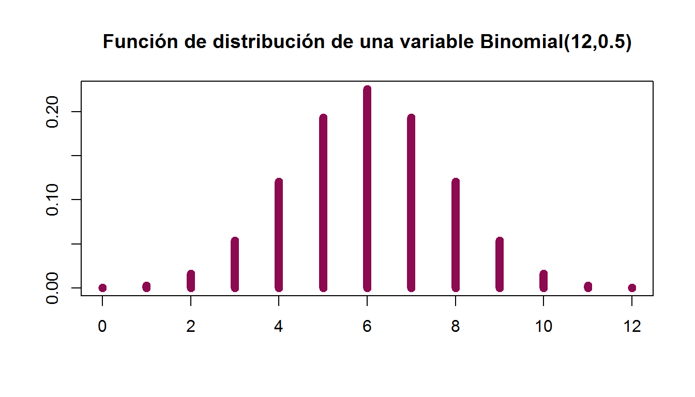

Capítulo 6 Prueba de Cox Stuart
La siguiente prueba tiene como objetivo identificar tendencias en series de observaciones. Si \(\{X_{i}\}^{n}_{i=1}\) es una serie de observaciones consecutivas, una manera de intentar descubrir si hay o no una tendencia es fijarse en las diferencias del tipo \(X_{i+c} - X_{i}\) con \(c = \frac{n}{2}\) si \(n\) es par y \(c =\frac{(n + 1)}{2}\) si es impar. Si \(\{X_{i}\}^{n}_{i=1}\) tuviera una tendencia creciente, esperaríamos que las diferencias \(X_{i+c} - X_{i}\) fuesen, en promedio, positivas, en cambio, si la tendencia fuese decreciente, se esperaría que las \(X_{i+c} - X_{i}\) fueran negativas, en promedio. Note que la elección de \(c\) produce las mayores distancias entre índices temporales para diferencias homogéneas de la serie de tiempo.
6.1 Datos
Los datos son observaciones consecutivas de una serie de tiempo \(\{X_{i}\}^{n}_{i=1}\).
En esta prueba se agrupan en parejas de la forma \((X_{i},X_{i+c})\) a las que se les asigna el signo \("+"\) si \(X_{i+c} > X_{i}\), el signo \("-"\) si \(X_{i+c} < X_{i}\) o “0” si hay empates.
6.2 Supuestos
Las variables aleatorias \(X_{1}, X_{2}, \ldots, X_{n}\) son mutuamente independientes.
La escala de medida de las \(X_{i}s\) es al menos ordinal.
Las \(X_{i}s\) son todas idénticamente distribuidas o existe una tendencia creciente o decreciente.
6.3 Estadístico de Prueba
\[T=Total\ de\ signos\ "+"\]
La distribución nula de \(T\) es una distribución binomial con \(n\) el número de parejas de la muestra sin empates y \(p=1/2\).
\[T\sim Bin(n,1/2)\]
Dependiendo del planteamiento de nuestro problema a resolver se formulan las hipótesis:
6.4 Hipótesis
Caso A (Prueba de dos colas)
\[\textbf{H}_0: \mathbf{P}[obtener\ +]= \mathbf{P}[obtener\ -]\]
\[vs\]
\[\textbf{H}_a: \mathbf{P}[obtener\ +] \neq \mathbf{P}[obtener\ -]\]
Regla de decisión
Rechazamos \(H_0\) a un nivel de significancia \(\alpha\) si
\[T \leq t \ \ \ o \ \ \ T>n-t\]
Elegimos \(\alpha\), el tamaño de la prueba y debemos encontrar \(t\) tal que
\[\mathbf{P}[Y \leq t]=\alpha/2\]
Donde \(Y \sim Bin (n,1/2)\).
Por otro lado, si \(n>20\) puede resultar más sencillo utilizar una aproximación normal para realizar la prueba, en dicho caso se puede utilizar el estadístico:
\[t=\frac{1}{2}\left(n+z_{\alpha/2}\ \sqrt{n}\right)\]
Donde \(z_{\alpha/2}\) es el cuantil de una distribución normal estándar que se puede obtener en la tabla correspondiente.
y calculamos el \(p-value\) de la siguiente manera:
\[p-value=2*min\{\mathbf{P}[Y\leq T],\mathbf{P}[Y\geq T]\}\]
Sugerimos que si \(n>20\),el \(p-value\) puede obtenerse más sencillo usando la aproximación normal:
\[\mathbf{P}[Y\leq T] \thickapprox \mathcal{N} \left(\frac{2T-n+1}{\sqrt{n}}\right)\] \[\mathbf{P}[Y\geq T] \thickapprox 1- \mathcal{N} \left(\frac{2T-n-1}{\sqrt{n}}\right)\]
Caso B (Prueba de cola inferior)
\[\textbf{H}_0: \mathbf{P}[obtener\ +] \geq \mathbf{P}[obtener\ -]\]
\[vs\]
\[\textbf{H}_a: \mathbf{P}[obtener\ +] < \mathbf{P}[obtener\ -]\]
Regla de decisión
Rechazamos \(H_0\) a un nivel de significancia \(\alpha\) si
\[T \leq t\]
Elegimos \(\alpha\), el tamaño de la prueba y debemos encontrar \(t\) tal que
\[\mathbf{P}[Y \leq t]=\alpha\]
Donde \(Y \sim Bin (n,1/2)\).
y calculamos el \(p-value\) de la siguiente manera:
\[p-value=\mathbf{P}[Y\leq T]\]
Sugerimos que si \(n>20\),el \(p-value\) puede obtenerse más sencillo usando la aproximación normal:
\[\mathbf{P}[Y\leq T] \thickapprox \mathcal{N} (\frac{2T-n+1}{\sqrt{n}})\]
Caso C (Prueba de cola superior)
\[\textbf{H}_0: \mathbf{P}[obtener\ +] \leq \mathbf{P}[obtener\ -]\]
\[vs\]
\[\textbf{H}_a: \mathbf{P}[obtener\ +] > \mathbf{P}[obtener\ -]\]
Regla de decisión
Rechazamos \(H_0\) a un nivel de significancia \(\alpha\) si
\[T > n-t \]
Elegimos \(\alpha\), el tamaño de la prueba y debemos encontrar \(t\) tal que
\[\mathbf{P}[Y \leq t]=\alpha\]
Donde \(Y \sim Bin (n,1/2)\).
y calculamos el \(p-value\) de la siguiente manera:
\[p-value=\mathbf{P}[Y\geq T]\]
Sugerimos que si \(n > 20\),el \(p-value\) puede obtenerse más sencillo usando la aproximación normal:
\[\mathbf{P}[Y\geq T] \thickapprox 1- \mathcal{N} \left(\frac{2T-n-1}{\sqrt{n}}\right)\]
Ahora aplicaremos lo anterior en un ejemplo ilustrativo:
6.5 Ejemplo
Una hidroeléctrica esta muy interesada en seguir las tasas promedio de descarga de agua de las corrientes que lo alimentan. Se tienen los registros mensuales de estas tasas (en pies cúbicos por segundo) durante un período de 24 meses. La empresa sospecha que la tasa esta disminuyendo. ¿Podemos corroborar la sospecha con un nivel de significancia del 5%?
Los datos están en la siguiente tabla, los cuales estan emparejados por mes ya que estas tasa de descarga siguen un ciclo anual,Se sabe que la tasa de descarga sigue un ciclo anual, por lo que no se puede emparejar las descargas de corriente durante dos meses diferentes; sin embargo, al emparejar los mismos meses consecutivos, se puede investigar la existencia de una tendencia. Los datos son los siguientes::
\[ \begin{array}{|c| c c|c| c c|} \hline \textbf{Mes} & \textbf{Primer Año} & \textbf{Segundo Año} & \textbf{Mes} & \textbf{Primer Año} & \textbf{Segundo Año}\\ \hline Enero & 14.6 & 14.2 & Julio & 92.8 & 88.1 \\ \hline Febrero&12.2&10.5&Agosto&74.4&80 \\ \hline Marzo&104&123&Septiembre&75.4&75.6 \\ \hline Abril&220&190&Octubre&51.7&48.8 \\ \hline Mayo&110&138&Noviembre&29.3&27.1 \\ \hline Junio&86&98.1&Diciembre&16&15.7 \\ \hline \end{array} \]
Los datos ya estan emparejados ahora sólo debemos asignar los signos considerando \(X_i\) el primer año y \(Y_i\) el segundo año.
Recordando que cada par de datos en la muestra se clasificará por un signo \("+"\) cuando \(X_{i} < Y_{i}\), por un signo “-” cuando \(X_{i} > Y_{i}\) y se omitirán las parejas cuando \(X_i = Y_i\). Y el tamaño de la muestra después de quitar los empates será \(n\), haremos lo siguiente:
\[ \begin{array}{|c|c c c|} \hline \textbf{Mes} & \textbf{Primer Año} & \textbf{Segundo Año}&\textbf{Signo}\\ \hline Enero&14.6&14.2&- \\ Febrero&12.2&10.5&-\\ Marzo&104&123&+ \\ Abril&220&190&- \\ Mayo&110&138&+ \\ Junio&86&98.1&+ \\ Julio&92.8&88.1&-\\ Agosto&74.4&80&+ \\ Septiembre&75.4&75.6&+ \\ Octubre&51.7&48.8&- \\ Noviembre&29.3&27.1&- \\ Diciembre&16&15.7&-\\ \hline \end{array} \]
Paso 1 Escribimos la prueba a utilizar
La prueba a utilizar Prueba Cox-Stuart Caso B cola inferior
Paso 2 Formulamos nuestras hipótesis en contexto al problema planteado
\[\textbf{H}_0:\ \mbox{La tasa promedio de descarga de agua no está disminuyendo.}\] \[vs\]
\[\textbf{H}_a: \ \mbox{La tasa promedio de descarga de agua está disminuyendo.}\]
Paso 3 Estadístico de prueba
Utilizaremos el estadístico
\[T=5 \ \ número \ de \ signos\ "+"\]
\[T\sim Bin(12,1/2)\]
Paso 4 Procedimiento completo
Supuestos:
- Muestra aleatoria de tamaño 12.
Tomaremos como “éxito” los que si están disminuyendo, en este caso los signos “+”.
Tomaremos \(\alpha\)= 5% =0.05 el nivel de significancia.
\(n=12\) tamaño de la muestra
\(p\)=1/2
Paso 5 Regla de decisión
Rechazamos \(H_0\) a un nivel de significancia \(\alpha\) si \(T \leq t\)
\[T=5 \nleq 3=t\]
\(\therefore\) No rechazamos \(H_0\)
y calculamos el \(p-value\) de la siguiente manera:
\[p-value=\mathbf{P}[Y\leq T]=\mathbf{P}[Y\leq 5]=0.3872\] \(\therefore\) \(p-value=0.3872>0.05=\alpha\) entonces no rechazamos \(H_0\).
Paso 6 Conclusión
Existe evidencia suficiente para decir que la tasa promedio de descarga de agua no está disminuyendo.
6.6 Ejemplo en R-Studio
Ahora haremos la réplica en R.
La estadística de prueba será \(T=5\). Tomaremos \(\alpha=5\%\)
#Datos
T_1=5 #Número de éxitos (+)
alpha=0.05 #Nivel de significancia
n=12 #Tamaño de la muestra
p=0.5 #Para la prueba de cox "p" siempre será 1/2Según el planteamiento de las hipótesis, este es un Caso B (de cola inferior), por lo que siguiendo la regla de decisión se rechaza \(H_0\) si \(T\leq t\) donde \(t\) será en cuantil que acumule 5% en la distribución binomial
Podemos graficar la función de distribución:
 Calculamos \(t\) y el \(p-value\):
t=qbinom(.05,n,p) #Cuantil a comparar con el estadístico
t[1] 3pvalue=pbinom(T_1,n,p) #p-value
pvalue[1] 0.387207Tenemos que como \(T=5\nleq 3 =t\), entonces NO se rechaza \(H_0\) y por lo tanto se concluye que NO hay información suficiente para decir que la tasa promedio de descarga mensual este disminuyendo.
Finalmente utilizaremos la función en R:
binom.test(5,n,p=0.5,alternative = "less")
Exact binomial test
data: 5 and n
number of successes = 5, number of trials = 12, p-value = 0.3872
alternative hypothesis: true probability of success is less than 0.5
95 percent confidence interval:
0.0000000 0.6847622
sample estimates:
probability of success
0.4166667 x=c(14.6,14.2,12.2,10.5,104,123,220,190,110,138,86,98.1,92.8,88.1,74.4,80,75.4,75.6,51.7,48.8,29.3,27.1,16,15.7)
library(randtests)
cox.stuart.test(x)
Cox Stuart test
data: x
statistic = 4, n = 12, p-value = 0.3877
alternative hypothesis: non randomness6.7 Ejercicios
- Un programa ecológico sobre la contaminación de un río tomó 5 muestras de agua de diferentes lugares de un río antes y después de dos años, obteniéndose los siguientes resultados. Los números representan la media de la contaminación, donde medidas grandes indican alta contaminación.
\[ \begin{array}{||c| |c| |c||} \hline \textbf{Numero de Muestras} & \textbf{Medidas iniciales} & \textbf{Medidas después de 2 años} \\ \hline \hline 1 &88.4& 87.1 \\ \hline \hline 2& 81.3 &79.4 \\ \hline \hline 3 &68.4 & 69.1 \\ \hline \hline 4 &100.5& 91.1 \\ \hline \hline 5 & 93.2&95.3 \\ \hline \hline \end{array} \]
Se está interesado en saber si el programa de rehabilitación ecológica ha tenido efecto en la reducción de la contaminación. Use \(\alpha =1%\).
- Se presentan a continuación los tipos de cambio MXN-USD de los últimos 30 días.
24.48 , 24.07 , 23.66 , 23.70 , 23.93 , 24.34 , 24.22 , 23.87 , 23.96 , 24.05 , 23.78 , 23.74 , 23.21 , 22.88 , 22.74 , 22.73 , 22.58 , 22.21 , 22.33 , 22.21 , 22.17 , 22.21 , 22.04 , 21.79 , 21.76 , 21.91 , 21.58 , 21.60 , 21.50 , 21.91
Se desea corroborar la aseveración del presidente respecto a que el peso mexicano esta recuperando fuerza. Use \(\alpha =10%\).